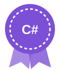
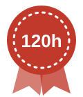

Formación
Mi camino académico
Del colegio a la universidad, y con varias certificaciones en el camino.
-
2025 – Actualidad
Ingeniería de Software
Fundación Universitaria Compensar, Bogotá.
-
2022
Bachiller académico
Liceo Central Américas I.E.D., Bogotá.
Formación complementaria
Certificaciones, cursos y diplomado
| Insignia | Formación | Entidad | Tipo |
|---|---|---|---|
| Java | Oracle | Certificación | |
| Python | Platzi | Certificación | |
 |
C# | Microsoft | Certificación |
| Database | Oracle | Certificación | |
| Python para Ciencia de Datos | Platzi | Curso | |
 |
Contabilidad Básica (120 horas) | Diplomado certificado | Diplomado |
| Java Programming | Oracle | Curso | |
| Total: 7 formaciones complementarias | |||
En curso
Inglés
Nivel A2 y en formación continua. Mi meta es poder leer documentación técnica y hablar con equipos en inglés sin miedo.